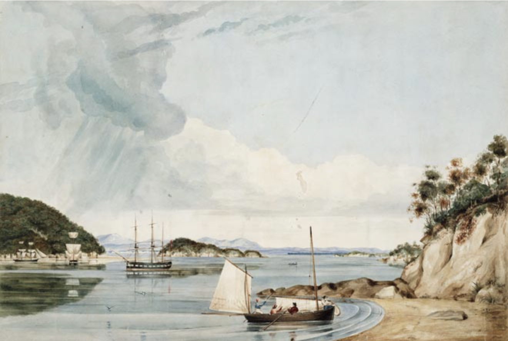
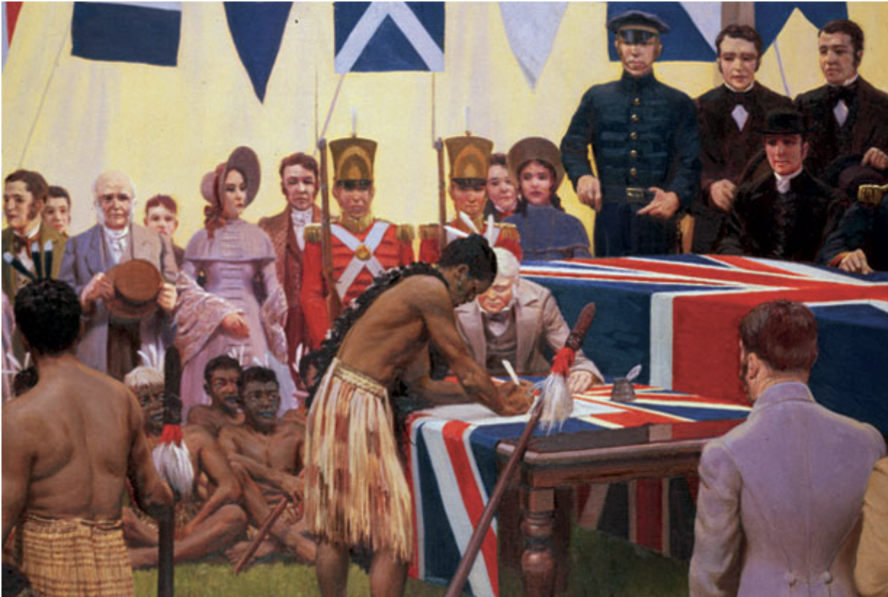
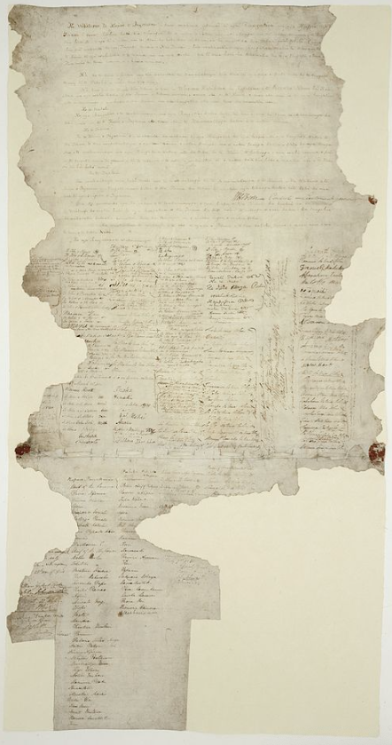

The British government was more concerned by other developments. European speculators were reported to have purchased vast areas of Te Ika-a-Maui and Te Waipounamu (the North and South Islands). At the same time, the London-based New Zealand Company had firm plans for organised settlement in New Zealand. In 1839 the company prepared to buy land on either side of Te Moana-o-Raukawa (Cook Strait), and dispatched ships there carrying several hundred settlers.

The British government finally decided to take action on New Zealand in 1839. It appointed a naval captain, William Hobson, as consul to an independent New Zealand, and as lieutenant-governor to any parts of the country that hapū and rangatira would consent to becoming British. His instructions directed him to negotiate for the sovereignty of all or parts of New Zealand, and to establish a British colony. En route from Britain Hobson received advice from George Gipps, the governor of New South Wales, about drafting a treaty with Māori.

Hobson arrived in the Bay of Islands on 29 January 1840. With the help of his secretary, James Freeman, he drew up some notes for a treaty. James Busby, the British Resident (an official position as a consular representative), tidied these up and added to them. Over an evening, the notes were translated into te reo Māori by the missionary Henry Williams and his son Edward.
Hobson presented this te reo Māori treaty (te tiriti) to around 500 Māori invited to Waitangi on 5 February. They held a lively debate on the possible effects of the treaty on their rangatiratanga, land and trade, but no agreement had been reached when the day-long meeting closed

On the night of the 5th, rangatira gathered at Te Tii near the Waitangi River to discuss whether they would give their agreement to the treaty. The following day, 6 February 1840, with little further debate, more than 40 rangatira agreed to sign te tiriti. This document was written in te reo. Some drew their moko as their signature. The French Catholic Bishop Jean Baptiste François Pompallier was present that day and requested that all religious beliefs should be allowed in the new colony. Hobson agreed to this (although this promise was not added in writing).
In the following days, meetings at Waimate North and Hokianga added further signatures and marks of agreement to the treaty. Not all the signatures and names are clear, but it seems around 240 people signed this original sheet. Agreement was not unanimous, and some rangatira expressed strong reservations about signing.
Hobson was quick to report to the British government that his mission had been successful. He noted that he had secured agreement to British sovereignty, especially from a number of rangatira who had signed the 1835 He Whakaputanga Declaration of Independence, in which (eventually) 52 rangatira, mainly from Northland, had declared their sovereignty over their whenua.
